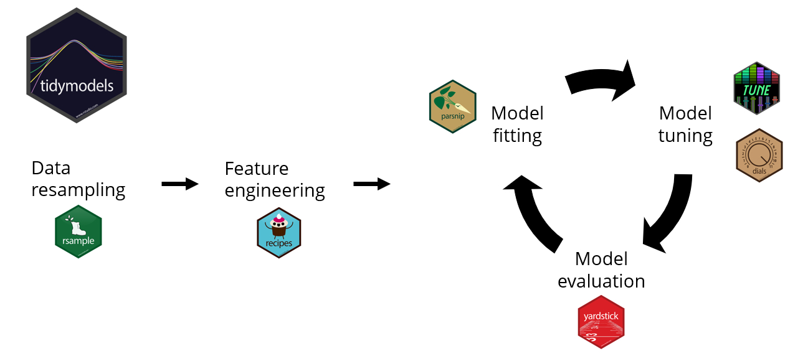
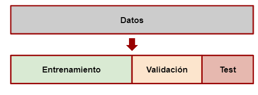
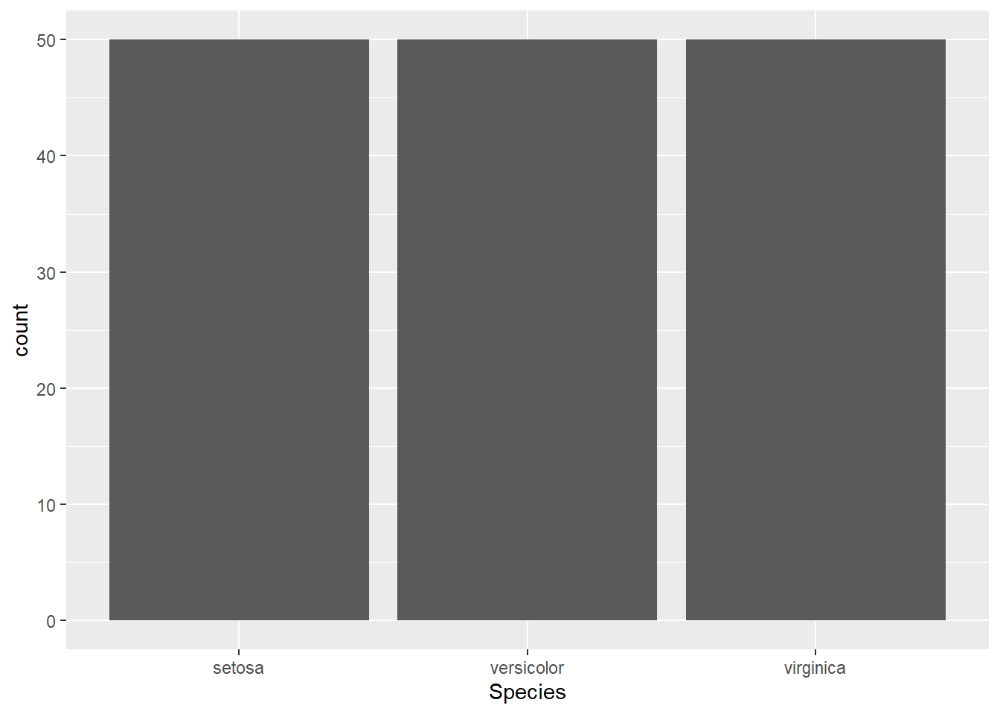
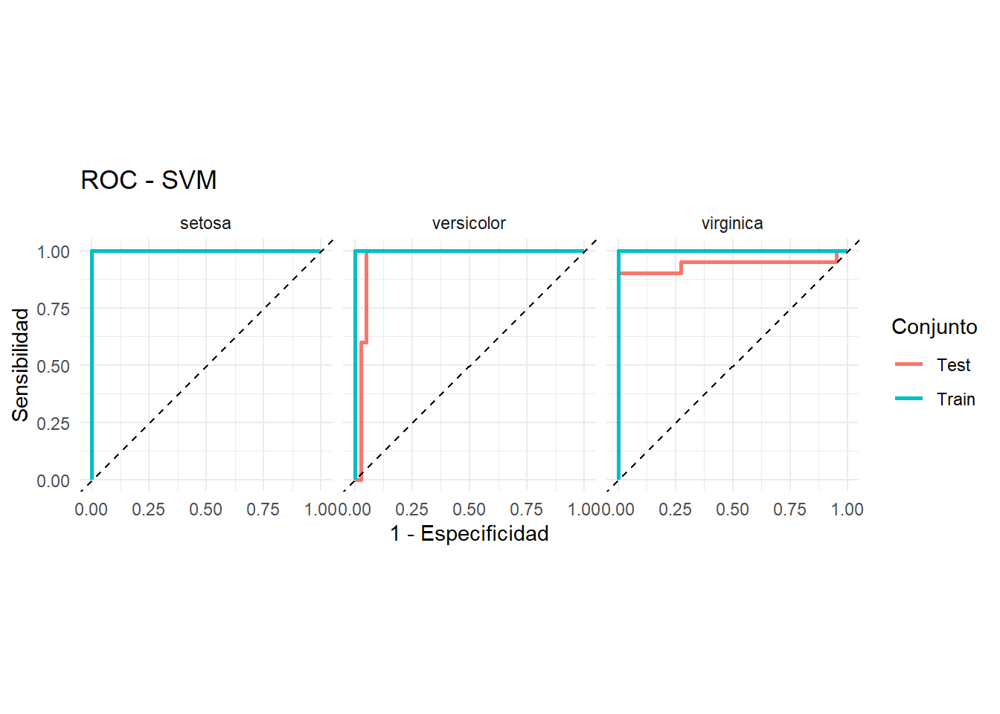
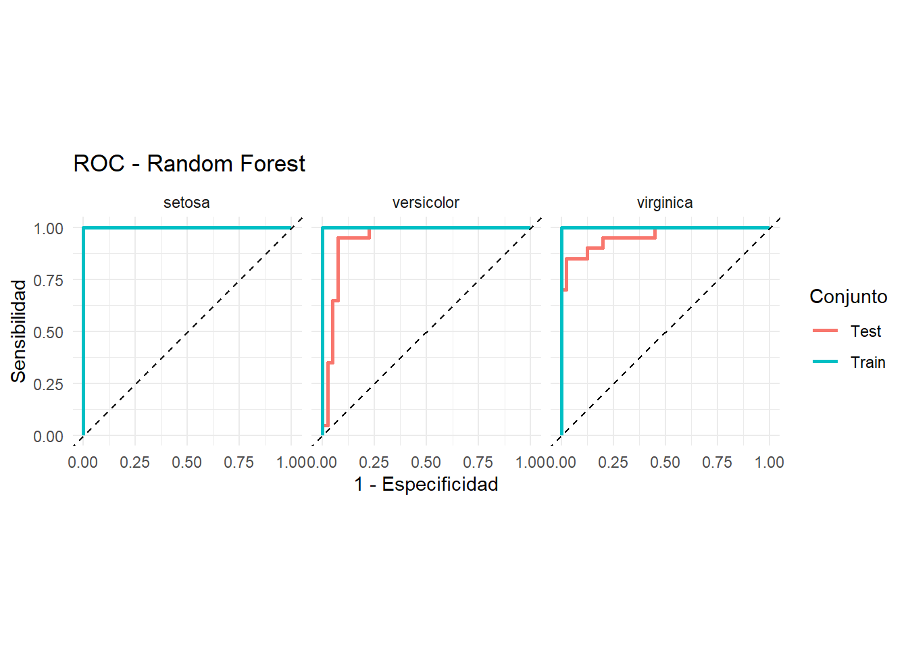
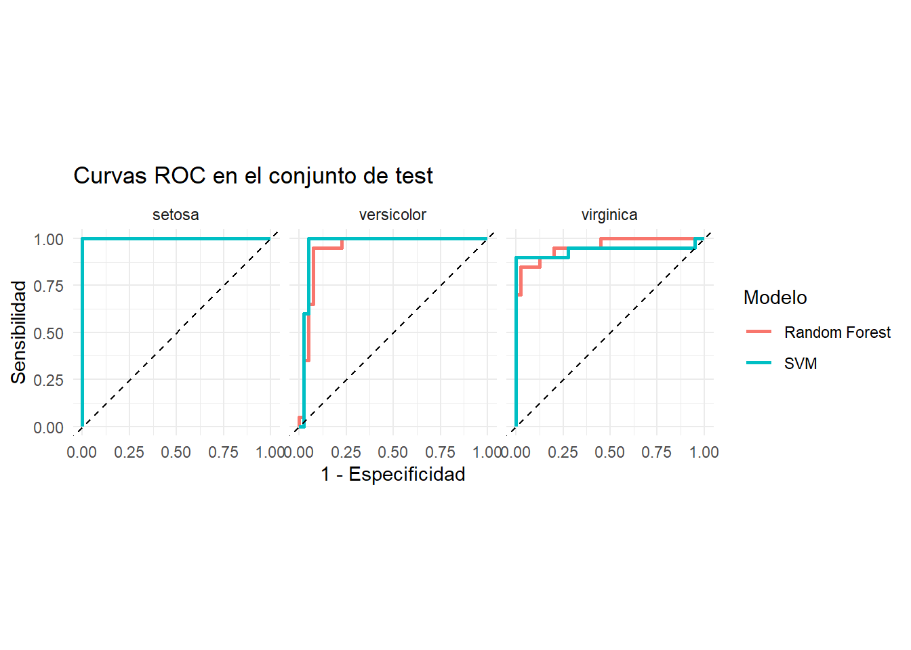

Código
library(tidymodels)Enfoque Estadístico del Aprendizaje 2026
Tidymodels ofrece un flujo de trabajo estructurado, reproducible y consistente que facilita y mejora la implementación y evaluación de modelos de regresión y clasificación en R.

Si no tenés instalado
tidymodelspodés hacerlo corriendo el siguiente código
install.packages("tidymodels")Los paquetes mas relevantes:
rsample: para realizar la división del dataset en entrenamiento, validación y testeo.
recipes: para el preprocesamiento
parnship: para especificar el modelo
yardstick: para evaluar el modelo
library(tidymodels)Veamos un ejemplo con iris

g <- ggplot(iris, aes(Species))
g + geom_bar()
con rsample::initial_split() creamos una división entre train y test
set.seed(1234)
iris_split <- initial_split(iris,
prop = 0.6,
strata = Species)#util para datos desbalanceados
iris_split<Training/Testing/Total>
<90/60/150>Cuando llamamos al objeto iris_split nos muestra la cantidad de elementos en train/test/total
Si queremos recuperar el dataset de entrenamiento, utilizamos el comando training()
iris_split %>%
training() Sepal.Length Sepal.Width Petal.Length Petal.Width Species
1 4.7 3.2 1.3 0.2 setosa
2 4.6 3.1 1.5 0.2 setosa
3 5.0 3.6 1.4 0.2 setosa
4 5.4 3.9 1.7 0.4 setosa
5 5.0 3.4 1.5 0.2 setosa
6 4.4 2.9 1.4 0.2 setosa
7 4.3 3.0 1.1 0.1 setosa
8 5.8 4.0 1.2 0.2 setosa
9 5.7 4.4 1.5 0.4 setosa
10 5.1 3.8 1.5 0.3 setosa
11 5.4 3.4 1.7 0.2 setosa
12 5.1 3.7 1.5 0.4 setosa
13 5.1 3.3 1.7 0.5 setosa
14 5.0 3.0 1.6 0.2 setosa
15 5.2 3.5 1.5 0.2 setosa
16 5.2 3.4 1.4 0.2 setosa
17 4.7 3.2 1.6 0.2 setosa
18 4.8 3.1 1.6 0.2 setosa
19 5.4 3.4 1.5 0.4 setosa
20 5.5 4.2 1.4 0.2 setosa
21 5.5 3.5 1.3 0.2 setosa
22 4.9 3.6 1.4 0.1 setosa
23 4.4 3.0 1.3 0.2 setosa
24 5.1 3.4 1.5 0.2 setosa
25 5.0 3.5 1.3 0.3 setosa
26 5.0 3.5 1.6 0.6 setosa
27 4.8 3.0 1.4 0.3 setosa
28 4.6 3.2 1.4 0.2 setosa
29 5.3 3.7 1.5 0.2 setosa
30 5.0 3.3 1.4 0.2 setosa
31 6.4 3.2 4.5 1.5 versicolor
32 6.9 3.1 4.9 1.5 versicolor
33 5.7 2.8 4.5 1.3 versicolor
34 4.9 2.4 3.3 1.0 versicolor
35 6.6 2.9 4.6 1.3 versicolor
36 5.2 2.7 3.9 1.4 versicolor
37 5.6 2.9 3.6 1.3 versicolor
38 6.7 3.1 4.4 1.4 versicolor
39 5.6 3.0 4.5 1.5 versicolor
40 5.6 2.5 3.9 1.1 versicolor
41 6.1 2.8 4.0 1.3 versicolor
42 6.3 2.5 4.9 1.5 versicolor
43 6.4 2.9 4.3 1.3 versicolor
44 6.6 3.0 4.4 1.4 versicolor
45 6.8 2.8 4.8 1.4 versicolor
46 6.7 3.0 5.0 1.7 versicolor
47 6.0 2.9 4.5 1.5 versicolor
48 5.5 2.4 3.8 1.1 versicolor
49 5.5 2.4 3.7 1.0 versicolor
50 6.0 2.7 5.1 1.6 versicolor
51 6.0 3.4 4.5 1.6 versicolor
52 6.3 2.3 4.4 1.3 versicolor
53 5.5 2.5 4.0 1.3 versicolor
54 5.5 2.6 4.4 1.2 versicolor
55 5.8 2.6 4.0 1.2 versicolor
56 5.0 2.3 3.3 1.0 versicolor
57 5.6 2.7 4.2 1.3 versicolor
58 5.7 2.9 4.2 1.3 versicolor
59 6.2 2.9 4.3 1.3 versicolor
60 5.7 2.8 4.1 1.3 versicolor
61 6.3 3.3 6.0 2.5 virginica
62 7.1 3.0 5.9 2.1 virginica
63 6.3 2.9 5.6 1.8 virginica
64 7.6 3.0 6.6 2.1 virginica
65 4.9 2.5 4.5 1.7 virginica
66 7.3 2.9 6.3 1.8 virginica
67 6.7 2.5 5.8 1.8 virginica
68 6.4 2.7 5.3 1.9 virginica
69 6.5 3.0 5.5 1.8 virginica
70 7.7 2.6 6.9 2.3 virginica
71 6.0 2.2 5.0 1.5 virginica
72 6.9 3.2 5.7 2.3 virginica
73 5.6 2.8 4.9 2.0 virginica
74 7.7 2.8 6.7 2.0 virginica
75 6.3 2.7 4.9 1.8 virginica
76 6.7 3.3 5.7 2.1 virginica
77 7.2 3.2 6.0 1.8 virginica
78 6.2 2.8 4.8 1.8 virginica
79 6.1 3.0 4.9 1.8 virginica
80 7.9 3.8 6.4 2.0 virginica
81 6.3 3.4 5.6 2.4 virginica
82 6.4 3.1 5.5 1.8 virginica
83 6.7 3.1 5.6 2.4 virginica
84 6.9 3.1 5.1 2.3 virginica
85 5.8 2.7 5.1 1.9 virginica
86 6.8 3.2 5.9 2.3 virginica
87 6.7 3.3 5.7 2.5 virginica
88 6.7 3.0 5.2 2.3 virginica
89 6.5 3.0 5.2 2.0 virginica
90 5.9 3.0 5.1 1.8 virginicaCon recipes::recipe() indicamos que comenzamos un pipeline de preprocesamiento, indicando cúal es la variable a predecir, con Species ~ ..
El objetivo de realizar el preprocesamiento de esta manera es que para muchas etapas del preprocesamiento, como puede ser el cálculo de la media para la imputación, sólo podemos utilizar la información del set de entrenamiento para evitar el data leakage. Por ello, si construimos un pipeline donde se calcula todo sobre entrenamiento, después es más sencillo reutilizarlo en test, sin cometer errores de este tipo.
recipe() Empieza un nuevo set de transformaciones para ser aplicadas.
prep() Ejecuta las transformaciones en el set de entrenamiento
Cada tranformación es un step(paso). Las funciones son tipos específicos de pasos. En este caso utilizamos:
step_corr() Elimina las variables que tienen una correlación alta con otras variables step_center() Centra los datos para que tengan media cero step_scale() Normaliza los datos para que tengan desvío estandar de 1.
Las funciones all_predictors y all_outcomes ayudan a especificar sobre qué valores hay que realizar las transformaciones.
iris_recipe <- training(iris_split) %>%
recipe(Species ~.) %>%
step_corr(all_predictors()) %>%
step_scale(all_predictors(), -all_outcomes()) %>%
prep()
iris_recipe── Recipe ──────────────────────────────────────────────────────────────────────── Inputs Number of variables by roleoutcome: 1
predictor: 4── Training information Training data contained 90 data points and no incomplete rows.── Operations • Correlation filter on: Petal.Length | Trained• Scaling for: Sepal.Length, Sepal.Width, Petal.Width | TrainedCon la función bake() podemos aplicar la receta que preparamos antes para los datos de entrenamiento. Para ello el primer objeto que pasamos es la receta y como parámetro de bake pasamos el dataset de test (recuperado con la función testing de rsample)
iris_test <- iris_recipe %>%
bake(testing(iris_split))
iris_test# A tibble: 60 × 4
Sepal.Length Sepal.Width Petal.Width Species
<dbl> <dbl> <dbl> <fct>
1 6.08 8.22 0.264 setosa
2 5.85 7.05 0.264 setosa
3 5.49 7.98 0.397 setosa
4 5.85 7.28 0.132 setosa
5 6.44 8.69 0.264 setosa
6 5.73 7.98 0.264 setosa
7 5.73 7.05 0.132 setosa
8 6.44 9.16 0.529 setosa
9 6.08 8.22 0.397 setosa
10 6.80 8.92 0.397 setosa
# ℹ 50 more rowsiris_train <- iris_recipe %>%
bake(training(iris_split))
iris_train# A tibble: 90 × 4
Sepal.Length Sepal.Width Petal.Width Species
<dbl> <dbl> <dbl> <fct>
1 5.61 7.51 0.264 setosa
2 5.49 7.28 0.264 setosa
3 5.96 8.45 0.264 setosa
4 6.44 9.16 0.529 setosa
5 5.96 7.98 0.264 setosa
6 5.25 6.81 0.264 setosa
7 5.13 7.05 0.132 setosa
8 6.92 9.39 0.264 setosa
9 6.80 10.3 0.529 setosa
10 6.08 8.92 0.397 setosa
# ℹ 80 more rowsEn R hay muchos paquetes que implementan el mismo tipo de modelo. Normalmente cada implementación define los parámetros del modelo de forma distinta. Por ejemplo, para el modelo Random Forest, la librería ranger define el número de árboles como num.trees, mientras que la librería randomForest lo nombra ntree.
Se puede entrenar cualquier modelo (que este incluído en tidymodels) siguiendo los pasos que se muestran a continuación.
1- Especificar el modelo (eg. Regresión logística, Random Forest, SVM, etc)
2- Con set_engine() se especifíca la familia de modelos
3- Con set_mode() se especifica el tipo de modelo a entrenarse (regresión o clasificación)
4- Usar la función fit () para entrenar el modelo y, dentro de eso, debe proporcionar la notación de la fórmula y el conjunto de datos
##Con los hiperparámetros por default
#SVM
model_SVM <-
svm_rbf() %>%
set_mode("classification") %>%
set_engine("kernlab") %>%
fit(Species ~ ., data = iris_train)
#Random Forest
model_RF <- rand_forest() %>%
set_engine("ranger") %>%
set_mode("classification") %>%
set_args(trees = 100) %>%
fit(Species ~ ., data = iris_train)Para predecir los datos de test y train utilizamos la conocida función predict. Sin embargo, cuando utilizamos esta función sobre un objeto de la librería parsnip devuelve un tibble
Para agregar las predicciones a los datos de test podemos utilizar la función bind_cols
# SVM - Train
iris_train_svm <- bind_cols(
predict(model_SVM, iris_train, type = "class"),
predict(model_SVM, iris_train, type = "prob")
) %>%
bind_cols(iris_train)
# SVM - Test
iris_test_svm <- bind_cols(
predict(model_SVM, iris_test, type = "class"),
predict(model_SVM, iris_test, type = "prob")
) %>%
bind_cols(iris_test)
# Random Forest - Train
iris_train_rf <- bind_cols(
predict(model_RF, iris_train, type = "class"),
predict(model_RF, iris_train, type = "prob")
) %>%
bind_cols(iris_train)
# Random Forest - Test
iris_test_rf <- bind_cols(
predict(model_RF, iris_test, type = "class"),
predict(model_RF, iris_test, type = "prob")
) %>%
bind_cols(iris_test)
Recordemos que:
\(accuracy = \frac{TP+TN}{TP+FP+FN+TN}\)
\(sensitivity = recall = \frac{TP}{TP+FN}\)
\(specificity = \frac{TN}{TN+FP}\)
\(precision = \frac{TP}{TP+FP}\)
Curvas ROC
Las curvas ROC (Receiver Operating Characteristic) permiten evaluar la capacidad de un modelo de clasificación para discriminar entre clases considerando distintos umbrales de decisión. La curva representa la sensibilidad frente a la tasa de falsos positivos (1 - especificidad) para diferentes valores del umbral.
AUC= área bajo la curva ROC, que también sirve para comparar modelos.

Como iris es un problema de clasificación multiclase, las curvas ROC se construyen utilizando un enfoque one-vs-rest. De esta manera, se evalúa la capacidad del modelo para distinguir cada especie respecto de las otras dos.
Con la función yardstick::metrics() podemos medir la performance del modelo. Elige automáticamente las métricas apropiadas dado el tipo de modelo. Necesitamos aclarar cuáles son los datos predichos,estimate y reales, truth.
metricas <- metric_set(
accuracy,
sensitivity
)
# Función para calcular métricas
calcular_metricas <- function(datos, modelo, conjunto) {
datos %>%
metricas(
truth = Species,
estimate = .pred_class
) %>%
mutate(
Modelo = modelo,
Conjunto = conjunto
)
}
# Calcular métricas
metricas_comparacion <- bind_rows(
calcular_metricas(iris_train_svm, "SVM", "Train"),
calcular_metricas(iris_test_svm, "SVM", "Test"),
calcular_metricas(iris_train_rf, "Random Forest", "Train"),
calcular_metricas(iris_test_rf, "Random Forest", "Test")
) %>%
select(Modelo, Conjunto, .metric, .estimate) %>%
pivot_wider(
names_from = .metric,
values_from = .estimate
)
metricas_comparacion# A tibble: 4 × 4
Modelo Conjunto accuracy sensitivity
<chr> <chr> <dbl> <dbl>
1 SVM Train 1 1
2 SVM Test 0.9 0.9
3 Random Forest Train 0.978 0.978
4 Random Forest Test 0.933 0.933Vamos a construir las curvas ROC
# Función para calcular ROC
calcular_roc <- function(datos, modelo, conjunto) {
datos %>%
roc_curve(
truth = Species,
.pred_setosa,
.pred_versicolor,
.pred_virginica
) %>%
mutate(
Modelo = modelo,
Conjunto = conjunto
)
}
# Calcular ROC
roc_comparacion <- bind_rows(
calcular_roc(iris_train_svm, "SVM", "Train"),
calcular_roc(iris_test_svm, "SVM", "Test"),
calcular_roc(iris_train_rf, "Random Forest", "Train"),
calcular_roc(iris_test_rf, "Random Forest", "Test")
)roc_comparacion %>%
filter(Modelo == "SVM") %>%
ggplot(aes(
x = 1 - specificity,
y = sensitivity,
color = Conjunto
)) +
geom_path(linewidth = 1) +
geom_abline(
linetype = "dashed"
) +
facet_wrap(~.level) +
coord_equal() +
labs(
title = "ROC - SVM",
x = "1 - Especificidad",
y = "Sensibilidad",
color = "Conjunto"
) +
theme_minimal()
roc_comparacion %>%
filter(Modelo == "Random Forest") %>%
ggplot(aes(
x = 1 - specificity,
y = sensitivity,
color = Conjunto
)) +
geom_path(linewidth = 1) +
geom_abline(
linetype = "dashed"
) +
facet_wrap(~.level) +
coord_equal() +
labs(
title = "ROC - Random Forest",
x = "1 - Especificidad",
y = "Sensibilidad",
color = "Conjunto"
) +
theme_minimal()
¿Cuál de los dos modelos generaliza mejor a datos que no vio? Puedo comparar SVM y Random Forest en test.
roc_test <- roc_comparacion %>%
filter(Conjunto == "Test")
ggplot(
roc_test,
aes(
x = 1 - specificity,
y = sensitivity,
color = Modelo
)
) +
geom_path(linewidth = 1) +
geom_abline(linetype = "dashed") +
facet_wrap(~ .level) +
coord_equal() +
labs(
title = "Curvas ROC en el conjunto de test",
x = "1 - Especificidad",
y = "Sensibilidad",
color = "Modelo"
) +
theme_minimal()
Ahora se calcula AUC.
calcular_auc <- function(datos, modelo, conjunto) {
datos %>%
roc_auc(
truth = Species,
.pred_setosa,
.pred_versicolor,
.pred_virginica
) %>%
mutate(
Modelo = modelo,
Conjunto = conjunto
)
}
auc_comparacion <- bind_rows(
calcular_auc(iris_train_svm, "SVM", "Train"),
calcular_auc(iris_test_svm, "SVM", "Test"),
calcular_auc(iris_train_rf, "Random Forest", "Train"),
calcular_auc(iris_test_rf, "Random Forest", "Test")
)
auc_comparacion %>%
select(Modelo, Conjunto, .metric, .estimate)# A tibble: 4 × 4
Modelo Conjunto .metric .estimate
<chr> <chr> <chr> <dbl>
1 SVM Train roc_auc 1
2 SVM Test roc_auc 0.968
3 Random Forest Train roc_auc 1
4 Random Forest Test roc_auc 0.967Podemos ver las matrices de confusión para ambos modelos
iris_test_svm %>%
conf_mat(
truth = Species,
estimate = .pred_class
) Truth
Prediction setosa versicolor virginica
setosa 19 0 0
versicolor 0 17 2
virginica 1 3 18iris_test_rf %>%
conf_mat(
truth = Species,
estimate = .pred_class
) Truth
Prediction setosa versicolor virginica
setosa 20 0 0
versicolor 0 19 3
virginica 0 1 17Se resume toda la información en una Tabla
tabla_final <- metricas_comparacion %>%
left_join(
auc_comparacion %>%
group_by(Modelo, Conjunto) %>%
summarise(
AUC_promedio = mean(.estimate),
.groups = "drop"
),
by = c("Modelo", "Conjunto")
)
tabla_final# A tibble: 4 × 5
Modelo Conjunto accuracy sensitivity AUC_promedio
<chr> <chr> <dbl> <dbl> <dbl>
1 SVM Train 1 1 1
2 SVM Test 0.9 0.9 0.968
3 Random Forest Train 0.978 0.978 1
4 Random Forest Test 0.933 0.933 0.967